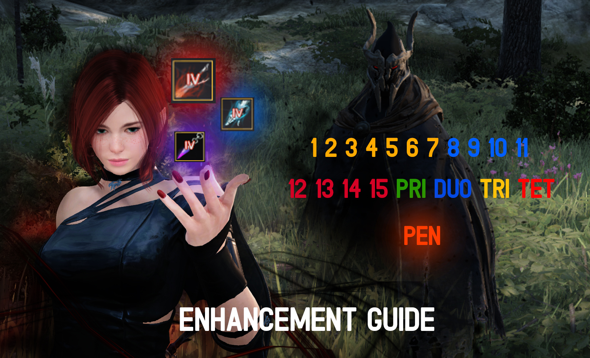
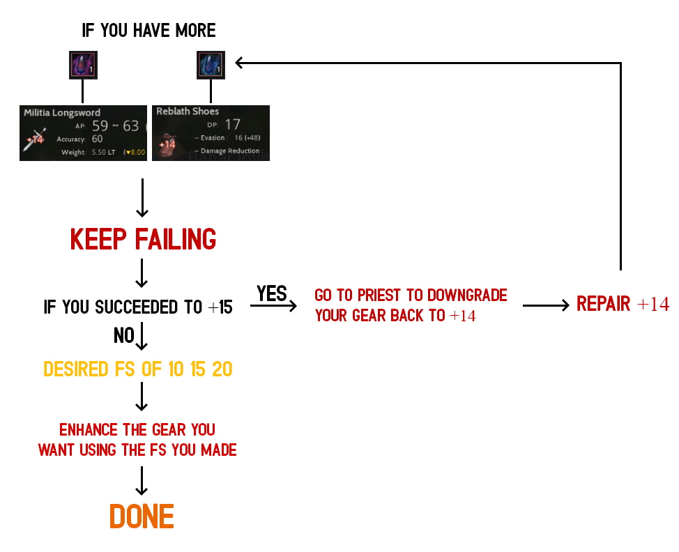

To get stronger you need to learn how to enhance your weapons and armors. I made this guide as easy to understand as I could.

You can enhance your gear both armor and weapon from +1 to +15 then PRI all the way to PEN and I divided this guide to tackle those enhancement levels. Keep in mind that your main goal when enhancing gears is to create Failstacks or FS for short so you can have higher chance of success. Now in order to create failstacks the only goal is to keep failing. What I mean by this is you need dummy gears aside from the gears that you will be using to get the desired failstack you want. To do all this you need to prepare the following items and follow this step by step guide.(NOTE: PLAYERS DO ENHACING IN VELIA BECAUSE THE NPC ARE CLOSER TO EACH OTHER.)
Enhancing Materials
1. Black Stone Armor. This is one of the loot you get from killing mobs. It is use to enhance any armor from +1 to +15. It is also use for failstacking.
2.  Black Stone Weapon. This is one of the loot you get from killing mobs. It is use to enhance any weapon from +1 to +15. It is also use for failstacking.
Black Stone Weapon. This is one of the loot you get from killing mobs. It is use to enhance any weapon from +1 to +15. It is also use for failstacking.
3.  Hard Black Crystal Shard. This is one of the loot you get from gathering. You need to heat this together with black stone armor to turn it into "concentrated magical black stone armor" . It is use to enhance any armor from +15 to PEN.
Hard Black Crystal Shard. This is one of the loot you get from gathering. You need to heat this together with black stone armor to turn it into "concentrated magical black stone armor" . It is use to enhance any armor from +15 to PEN.
4. Sharp Black Crystal Shard. This is one of the loot you get from gathering. You need to heat this together with black stone weap to turn it into "concentrated magical black stone armor"  . It is use to enhance any weapon from +15 to PEN.
. It is use to enhance any weapon from +15 to PEN.
5.  Stabilized Magical Black Stone. This is one of the loot you get world bosses. It is use for a guaranteed enhancement starting from +13 of any green rarity weapon and armor. (NOTE: You need a certain amount of this stone for +13,+14,+15.)
Stabilized Magical Black Stone. This is one of the loot you get world bosses. It is use for a guaranteed enhancement starting from +13 of any green rarity weapon and armor. (NOTE: You need a certain amount of this stone for +13,+14,+15.)
6.  Pure Magical Black Stone. This is one of the loot you get world bosses. It is use for a guaranteed enhancement starting from +13 of any yellow rarity weapon and armor. (NOTE: You need a certain amount of this stone for +13,+14,+15.)
Pure Magical Black Stone. This is one of the loot you get world bosses. It is use for a guaranteed enhancement starting from +13 of any yellow rarity weapon and armor. (NOTE: You need a certain amount of this stone for +13,+14,+15.)
Dummy Gears
1. Reblath Armor. If you have plenty of Black Stone Armor you can use this to make failstacks from 1 to 20. You can only buy this from velia blacksmith Tranan Underfoe.
2. Any Militia Weapons. If you have plenty of Black Stone Weapon you can use this to make failstacks from 1 to 20. You can buy this from the velia arms dealer Alfredo,
3. PRI Level Green Gears. You need to fail PRI green gears in order to go higher than 20 FS. You will need to enhance these dummy gears on purpose for the sake of failing. Buy it from the central market and I recommend you to buy ones that have a lot of stocks like Talis, Zereth, Rocaba.
Now that you have everything you need let's proceed to failstack making.
STEP 1: Put all of your enhancement materials in your inventory and right click your black stone armor or weapon to access enhancement window. Enhance your Reblath Shoes Armor and or Militia Weapon to +14 like this Militia . Since I have more Black Stone Weapon I decided to make Militia +14
Keep enhancing this dummy gear to +14 only and don't worry about succeeding or failing. Each failure will give you +1 FS and will cost you -5 durability. When you run out of durability you can easily restore it by buying the same gear with ZERO enhancement also known as clean gear. Go back to the respective NPC and buy 10 pcs of that gear and restore it to the blacksmith then continue failstacking.
For Step 2 you will be using your +14 reblath/ militia to make failstack in order to enhance your dummy green gears to PRI since with +14 you can make up to 20 FS and anything higher than that will make your +14 go to +15. If this happens you need to go to the priest in velia to turn your +15 back to +14.
Now that you can easily make up to 20 FS using your +14 dummy gear it's time to use it to enhance your second dummy gear but this time it should be higher than +14. See the whole process of making 20 fs using reblath/militia below

Below is your target failstack from +1 to +15 so make sure to stop failing your +14 once you reached this FS so you can switch the green gears and succeed. Assuming you start at +7 going to +8 as you can see +8 requires 10 fs or higher to get better chances of succeeding. This is also the difficulty of each enhancement level based on mine and my friends' experience. As you can see +12 to +15 is the most difficult and usually players use Stabilized for green gears and Pure Magical Black Stone for boss gears to soldier to this and at the end of the day it's RNG.
STEP 2: Enhance one of your dummy green gears to PRI in order to get FS higher than 20 whether it's Talis Armor, Zereth Armor, Yuria Weapons etc... During this step you may need to heat Black Stone Armor or Weapon (2 pcs) and Hard Black or Sharp Black Shard (1 pcs) to get the concentrated version to enhance +15 to PRI level. Make sure to use 15, 18 or 20 FS going from +15 to PRI. (NOTE: YOU MAY NEED TO MAKE MORE DUMMY PRI GEARS IF THE EXISTING ONE SUCCEEDED TO DUO LEVEL.)
Now that you have +14 reblath/militia and dummy PRI green gear for failstacking purposes this is when enhancing you gears begin. Just repeat step 1 to enhance all of your character's gear to +15.